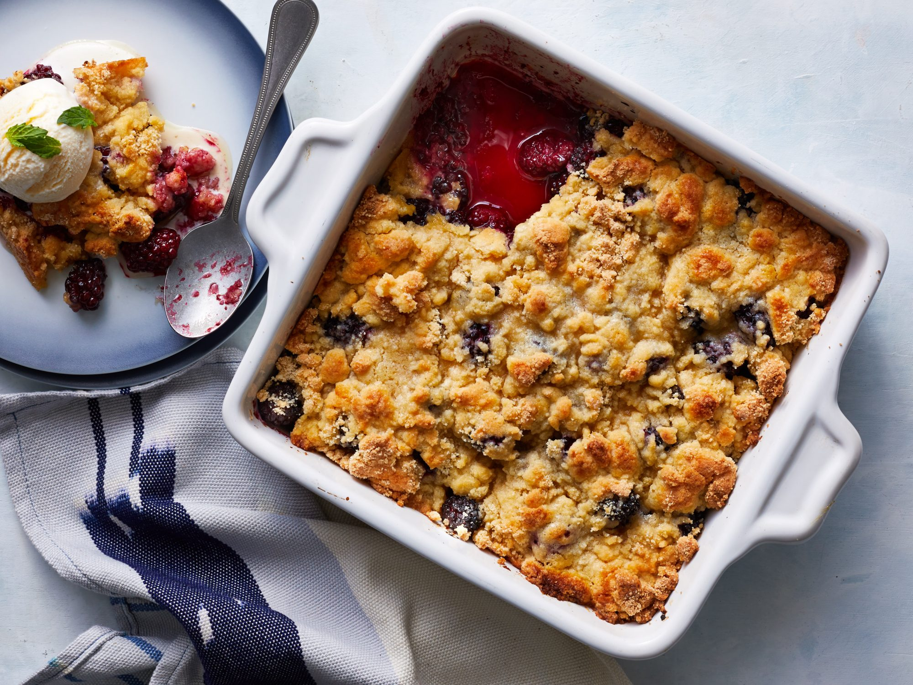

Blackberry Cobbler

Description
Blackberry cobbler is an OG dessert that everyone is sure to enjoy.
The freshness of the blackberries with the soft pastry is an amazing
ensemble of flavors that will leave you wanting more.
Ingredients
- 1 cup all-purpose flour
- 1 1/2 cups white sugar, divided
- 1 teaspoon baking powder
- 1/2 teaspoon salt
- 6 tablespoons cold butter
- 1/4 cup boiling water
- 2 tablespoons cornstarch
- 1/4 cup cold water
- 1 tablespoon lemon juice
- 4 cups fresh blackberries, rinsed and drained
Steps
- Combine brown sugar, butter, white sugar, and salt in a large
bowl; beat with an electric mixer until a creamy, deep brown
mixture forms. Add egg and vanilla; beat until mixture lightens
and becomes smooth, 10 to 15 seconds.
- Mix flour and baking soda together in a separate bowl. Add slowly
to the wet ingredients until mostly incorporated, but some white
traces of flour remain. Fold in milk chocolate, dark chocolate,
and white chocolate using a spatula, not the mixer. Cover the dough
and refrigerate for at least 30 minutes, or up to 48 hours.
- Preheat the oven to 350 degrees F (175 degrees C) when ready to
bake.
- Divide cold dough into 2 1/4-ounce portions and place on a cookie
sheet.
- Bake in the preheated oven until the edges start to look golden
brown and crispy, 10 to 12 minutes. Do not overbake; the centers
will not look fully done. Cool until cookies are set, about 30
minutes.